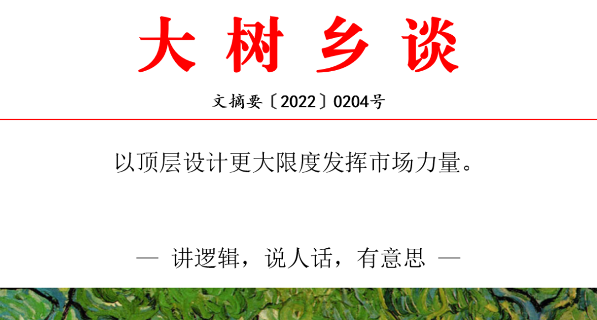
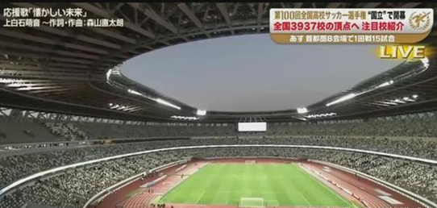

旧机制与新变革

今天立春，聊些有意思的话题。 我们正处于一个百年未有的大变革时代，变革就是破旧立新、调整旧的体制机制。中国正处于政经、文化、社会、科技、外交等多重转型期，更增加了变革的复杂性。 在社会与经济领域，这样的变革受到很多种因素影响，其中最为核心的两个因素就是政府与市场之间的关系。 变革对新来者意味着机遇，对传统存量则意味着冲击，但这种冲击并不一定是损失，也可能是更大的收获，关键看认知和能力结构，更看新的机制有没有建起来、是怎么建立的。 先举一个例子方便了解，那就是最近的男足惨败。 其实男足惨败一点都不稀奇，20年前就已经注定了。
在过去相当长时间里，中国的竞技体育一直就是举国体制，举国体制力量集中、高度依赖统一的管理体系，是一整套完整的组织架构和制度，有很多特点。 比如说准行政化的管理体系，现在足协有20多个类比正处级的单位，比如部际联席办（这是2015年足球改革新设立的）、综合部、财务部、对外联络部、媒体与公关部、规划部、法务部、会员协会部、国管部、女子部、技术部、青少部等等，说实在的处长可能比国足球员多。 又比如全国从区县到国家的体育队体系，这个体系在没有形成市场化的情况下，负责从全国找苗子，通过一级级的筛选，从区县到市到省再到全国，也构建了相匹配的运动员级别、考试、竞技比赛等等体系。
然后还要有对应的财政支持、教育体系配合、退役安置等等，这就形成了竞技体育的举国体制，当然上面说的很粗糙。 上面这套机制，可以认为基本是全政府因素发挥作用，这样的机制优点是见效特别快，投入也不大，不需要依赖全民的普遍运动，也不需要一个市场化的体系。 在过去很长时间，我们是没办法在竞技体育上发挥市场作用的，哪怕是足球这个最能市场化的运动。 但只靠政府发挥作用是不够的，尤其是竞技体育的根本是为了以体育的魅力推动全民健康，让所有人能够找到自己喜欢的体育项目，促进全民健身。 中国已经不需要像百年前、几十年前那样，需要靠竞技体育赢得国家荣誉，现在的我们已经不太在乎外国人给的荣誉了，我们已经在给自己加压。
而旧机制随着时间积累、受市场经济冲击等影响，出现了一些问题，比如很多省市区体育队越来越运转不下去，也包括在一些大众运动上，已经触及了实力的天花板，典型的就是足球。 2002年世界杯的那批男足球员，已经是旧机制培养出来的最后甚至是最强的一批球员，他们当然比现在强得多，但在旧机制下全国职业球员总数已经锁死了，而且可以预见从2002年以后还会越来越少，那从概率上讲，旧足球机制的实力天花板就是2002年了。 想要建设足球强国，无论从促进全民健身，还是提高中国足球世界排名，圆中国球迷世界杯梦想等等角度出发，旧机制都必须要改革。
怎么改革？最核心的就是调整政府和市场的关系，就是要推动市场化，更多发挥市场力量。 但必须强调一点，改革是很难的，要在承担改革不确定性的压力下，顶住旧机制的惯性，挑战旧的利益格局，建立新的更有效率的结构，难度很大，也容易走偏。 市场发挥力量的方式，与政府发挥力量的方式是极为不同的。假如以发挥政府力量的方式去调动市场力量，效果很可能不理想。 中国男子足球，就是典型。 足球市场化绝不是仅仅搞俱乐部，不是商业冠名，更不是把梯队建设给了俱乐部就行了。
企业赞助俱乐部，当然有情怀在里面，但是情怀不能当饭吃。企业必须要获利，这种利益可以是间接的，比如通过投资俱乐部获得一些招标、土地等方面的优惠，又比如打造企业品牌形象，终归是要有实际利益。 俱乐部更追求短期利益，这同中国足球做大做强的长远目标，并不一致。 比如对俱乐部而言，与其花几年、十几年时间，费时费力的去建梯队，去培养孩子们的足球热情，然后从中选择优秀的球员，还很可能给他人做衣裳。那为什么不直接买现成的呢？看谁家球员好，直接砸钱买，实在不行买外援、搞归化。
这多立竿见影啊，中国人对足球的喜爱如此热烈，虽然知道大家都采取短期策略，一定会伤害整个中国足球的未来，但是在其位谋其政，中国足球的未来太宏大了，不是一个俱乐部或者几家企业扛得起的。 对一个俱乐部来说，抓紧时机买买买，拿下中国冠军、拿下亚冠杯，这才是对俱乐部最有利的，花的钱也更确定性，比慢慢培养强得多。 从中国俱乐部的战绩来看，市场确实发挥了巨大作用。但是如何让市场力量推动中国足球的整体提升，这需要一整套更适应市场的新机制。 很显然，我们并没有做到。反而是举国体制的旧机制已经逐渐没了，以市场为核心的新机制没有建立起来，甚至出现扭曲。球员和管理体系还是旧机制的，但薪资倒是市场化了。 结果是什么呢？
有的朋友说中国男足没有拼搏精神，所以输给越南，女足有精神所以赢了日本。 小镇倒想说，没实力才只能讲精神，就别自我安慰了。中国男足说白了就是菜，就是这个水平，国足自己也清楚，实力差的太远，自然就会懈怠，毕竟拼了也未必赢，但不拼起码安全不影响回俱乐部赚钱。 虽然这些球员的想法还是过去20年的旧思想，没有发现中国职业足球的变化，未来很多球员必然会失业，但那更多是对低级别联赛和弱队，国足这帮人混个高收入也是没问题的，他们把利弊想的很清楚。
我们更需要思考的是，中国足球职业化几十年了，到现在全中国C级以上教练才多少？注册球员有多少？多少孩子能够每周踢一次球？每周又有多少比较正规的比赛？ 别再说什么14亿人了，中国竞技足球的人口基数是千位数、万位数，比越南还差着数量级，输给越南很正常，要是这样都赢了越南，人家越南的努力不委屈吗？ 女足为什么强？核心还是因为女足市场价值低，大家看得少。别看这几天有的人呼吁央视转播女足比赛，可真的转播了有多少去看的？数据做不得假。
现在女足还基本保持了旧体制，国外对女足也不重视，也没有搞起来市场化的全民女子足球，所以这时候讲精神是没问题的，足球方面旧体制虽然实力天花板有限，但也够了。 更重要的是，很多女子竞技运动的运动员，包括足球、排球等等，球员自身家庭经济状况并不太好，渴望改变命运，虽然现在收入相比男足很低，但终归还可以，而且有荣誉在里面。 但是，如果继续这样下去，女子足球的辉煌也很难说长久。 看看邻居日本的高中足球联赛，1月10日刚刚举行了第100届的决赛，这是人家高中联赛的现场，现场观众超过42000人。在这场决赛前，是日本全国4000支球队4个月的激烈角逐。

中国呢？什么时候能有这样的全民运动氛围？ 一个男子足球相比其他领域，牵扯到的利益少得多，行不行的也就那样，就算继续烂下去也无所谓。 但我们有太多太多领域，牵涉到的既得利益要大得多，改革也更加紧迫，那就太难了。
比如能源这个核心领域。 春节前，国家发改委公布《加快建设全国统一电力市场体系的指导意见》，明确到2025年全国统一电力市场体系初步建成。 这个文件的背景是持续数十年的能源改革，从2002年电力改革5号文《电力体制改革方案》计算，也已经20年了。
如果从1997年国家电力公司这个过渡性质的机构成立算起，中国电力市场化改革已经进行了25年，2015年电力体制改革9号文发布至今也7年了。 2002年确定了“厂网分开、主辅分离、主多分离、输配分开”的改革方向，到现在也只能说基本完成了“厂网分开”。 在这个过程中，市场发挥了巨大作用，中国电力发展有了长足进步，国家电网无论从规模还是技术水平上，都是全球绝对第一。停电已经基本远离了居民生活，居民用电基本没涨，电网稳定性大大提高，特高压输电打破了区域电力的垄断，全国电力更加成网。
因此，2022年我们才能够提出“加快建设全国统一电力市场体系”，但是仍然有很多挑战： 核心的当然还是如何继续处理好政府和市场的关系，电力是基础的公共供给，如何找到最高效、最有益人民的平衡点？ 权力集中和分权又该如何处理？是要继续输配一体，还是推进输配分开？ 传统能源与新兴能源又该如何协同发展？背后的利益如何调整？如何处理好能源机构转型同国家能源安全的关系？又该如何基于中国自身情况实现更好的经济性？ 对于这样牵扯全国乃至影响到其他国家的重大领域，必须要听专业人士的意见，但是专业人士也必然有他们自己的诉求，又该如何从大量不同的意见中找到真实的东西，让未来向对我们更有利的方向发展？ 这真是一个想想就头大的事，小镇也只是了解一些皮毛，未来计划分享下小镇的思考，欢迎大家提意见帮助小镇成长。
但有两点是明确的： 从来没有完美的政策，政策必然是因时因势而变，过去的政策存在问题，改革政策也一定存在问题，分析问题不是要否定其价值，而是为了看清未来方向，找到那个尽可能更优的方向。 未来也一定要强化顶层设计，协调好系统性和专业性，更大限度的发挥市场经济的力量，让政府和市场两大因素协调释放更多发展红利。 在这个过程中，对个人而言，谁能够真正去想清楚政府应该怎么办会怎么办，而不是站在自己的角度去思考应该怎么办，谁就能更多的借势。 过去依靠信息差倒买倒卖的时代已经过去了，未来想要过的更好，需要强大的信息处理和认知能力。 立春是一年之始，愿我们在新的一年里继续成长。